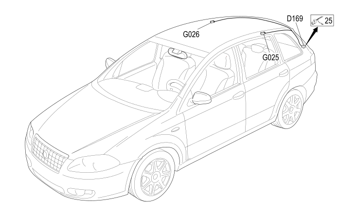

90 BRIDGE ON ROOF
- Path
- Electrical equipment > 2 WIRING > 90 BRIDGE ON ROOF
- Kind
- wiring harness
- Applies to
- all engines; all production periods
- Interactive page
- https://sloeber94.github.io/elrnDB-fCrm/en/#/194001852
Applies to: all engines; all production periods

Topics that link to this page (7)
- D045 SUN ROOF COUPLING (BRIDGE ON ROOF)
- D169 REAR COUPLING / REAR COURTESY LIGHT BRAID (BRIDGE ON ROOF)
- G020 REAR (CENTRE) COURTESY LIGHT (BRIDGE ON ROOF)
- G025 LEFT REAR COURTESY LIGHT (BRIDGE ON ROOF)
- G026 RIGHT REAR COURTESY LIGHT (BRIDGE ON ROOF)
- N034 SUN ROOF BLIND MOTOR (BRIDGE ON ROOF)
- N035 SUN ROOF MOTOR (BRIDGE ON ROOF)